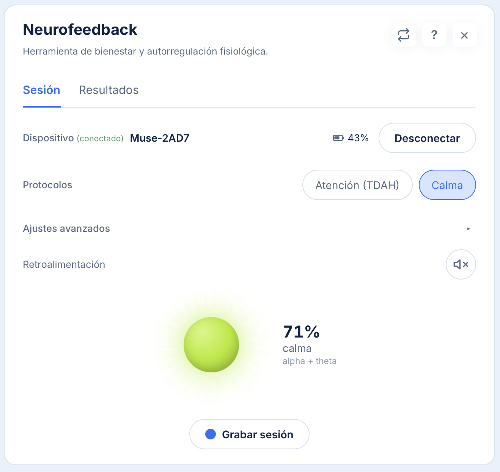
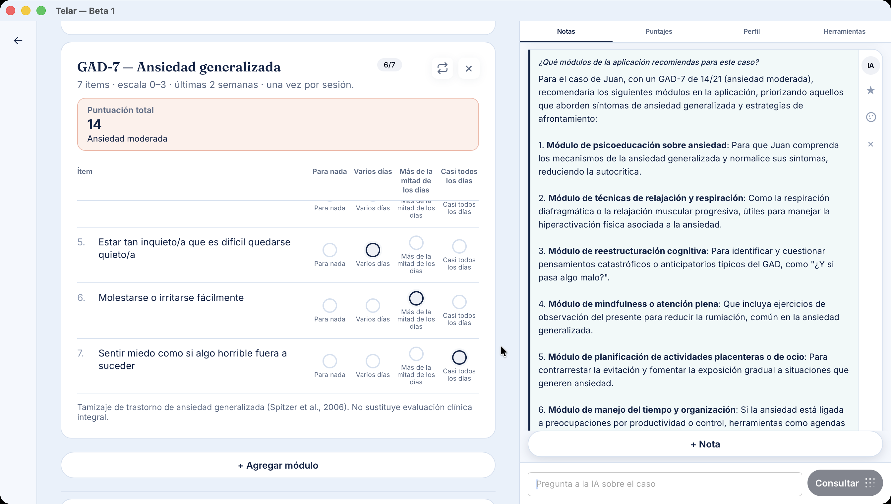

Neurofeedback
Da un salto al futuro con entrenamientos cerebrales. Con tan solo unos clics puedes trabajar variables como TDAH y ansiedad con tus pacientes.


Construye programas de psicoterapia, utiliza módulos de entrenamiento en tiempo real, potenciados con IA. Todas las herramientas que necesitas para mejorar tu consulta. Todo cifrado en tu Mac o PC.
El problema
Tamizajes en PDF sueltos, sin curva de puntajes entre sesiones, sin programas de tratamiento definidos. Difícil seguir cambios en atención o regulación al resto del programa.
Decenas de módulos de psicoeducación y entrenamiento para trabajar TDAH, trauma y ansiedad, escalas integradas, gráficos por sesión y presets.
Funciones
Da un salto al futuro con entrenamientos cerebrales. Con tan solo unos clics puedes trabajar variables como TDAH y ansiedad con tus pacientes.

Agenda, objetivos, convenios y módulos configurables — no solo una ficha estática por paciente.
Plantilla de 8 sesiones para trabajar TDAH con Neurofeedback, además de módulos de psicoeducación y escalas (ASRS, GAD-7, y otros).
Módulos de psicoeducación y entrenamientos con estimulación bilateral y Neurofeedback. Se incluyen escalas PCL-5, SPRINT-E-CL, IES-R, entre otros.
Curvas por sesión de ASRS, GAD-7, PCL-5, SPRINT e IES-R en el panel de estadísticas del tratamiento.
SQLCipher AES-256, PIN y Touch ID. Exportar, respaldar o borrar todo desde Ajustes.
PDF del programa de tratamiento y exportación de datos.
Planes
El Plan Profesional desbloquea funciones avanzadas sin tocar tus datos clínicos.
$0 CLP
Lo esencial para tu consulta, con tus datos en el equipo.
$15.000 CLP/mes
Suscripción mensual. El cobro solo verifica tu cuenta — los datos clínicos nunca salen de tu equipo.
Requisitos
macOS (Apple Silicon o Intel) o Windows 10/11. App de escritorio.
Solo si haces neurofeedback. Banda Interaxon Muse 2 con Bluetooth. Dónde comprarla · Curso v2
No necesario para el día a día clínico. Solo para verificar suscripción Pro o recibir actualizaciones si las activas.
Instalación
En Mac, usa el botón Descargar para macOS arriba. En acceso anticipado, macOS puede mostrar una advertencia de seguridad — es normal con software independiente. Windows (.exe) está en preparación; escríbenos por WhatsApp si lo necesitas ya.
Escríbenos por WhatsApp. Si te sirve, coordinamos una videollamada para ver el flujo: agenda, ficha, sesiones y resultados.
Dudas técnicas o reportes: GitHub Issues